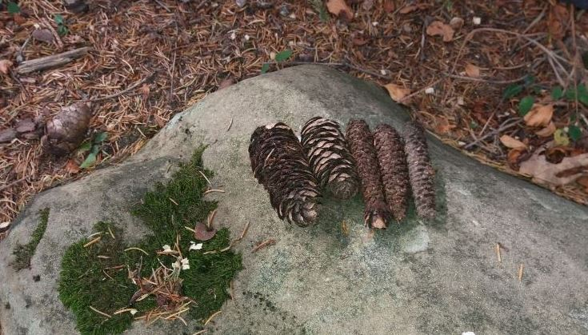
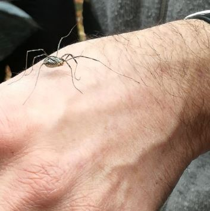
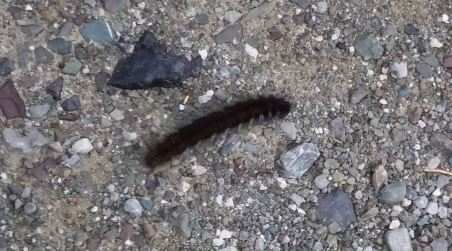
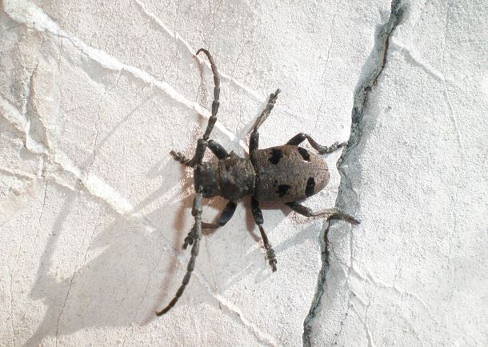
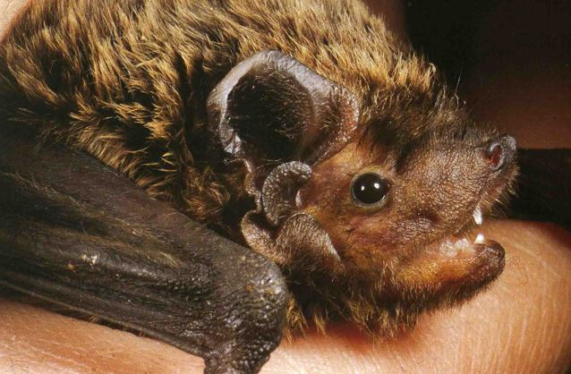
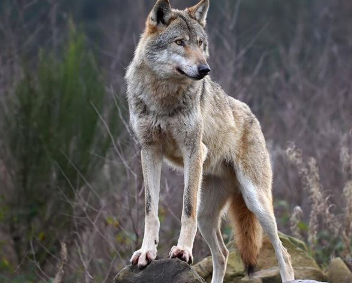
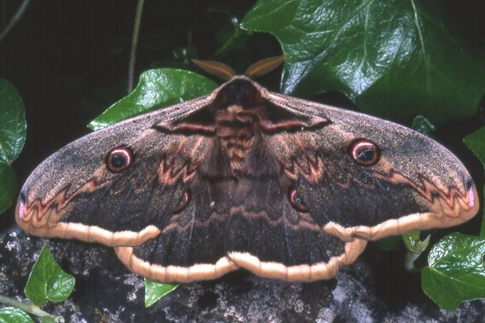
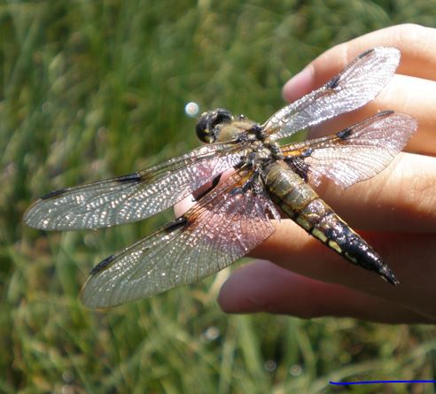
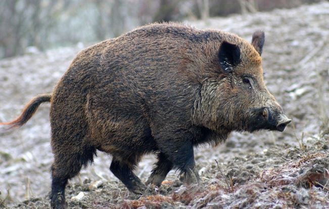

Le tracce degli animali
Difficile vedere animali specie se si cammina in comitiva. Possiamo però accorgerci della loro presenza nel bosco dalle tracce. Queste pigne sono state rosicchiate da qualcuno.. Le singole scaglie sono state strappate, slabbrate e questi sono i tratti distintivi del passaggio di uno scoiattolo. Arvicole e topi, visto che non riescono a strappare le scaglie, rosicchiano le pigne per bene lasciando un aspetto in generale più ordinato. Guardatevi intorno mentre camminate, troverete innumerevoli tracce degli abitanti del bosco anche se loro non si faranno vedere da voi perché schivi e paurosi nei confronti dell’uomo.

Opilionidi
Gli Opilionidi sono un ordine di Aracnidi, ma non sono ragni in quanto appartengono ad un altro ordine, "Opiliones". Questi aracnidi sono noti per le loro zampe eccezionalmente lunghe, rispetto alle dimensioni del corpo, anche se ci sono specie con gambe corte. La differenza tra gli opilionidi e i ragni è che negli opilionidi le due sezioni principali del corpo sono sostanzialmente unite in una struttura a forma ovale. Inoltre non dispongono di ghiandole della seta o velenifere. Sono state scoperte oltre 6400 specie in tutto il mondo, anche se si suppone che il numero reale possa superare 10000. Sono predatori terrestri che catturano piccoli artropodi della lettiera.

Bruco (Macrothylacia rubi)
Quando lo abbiamo trovato, probabilmente stava cercando un rifugio per entrare in ibernazione e superare l’inverno per poi trasformarsi in farfalla la primavera successiva. La quasi totalità dei bruchi è fitofaga, cioè ricava il proprio nutrimento dalle piante. Molti di essi risultano perciò dannosi a specie vegetali di interesse agricolo o forestale. In genere si nutrono delle foglie.

Coleottero ( Morimus sp.)
Coleottero cerambicidae xylofago (si nutre del legno di alberi attempati) presente in tutto il territorio montano, in allegato II Direttiva Habitat e quindi specie di interesse per azioni di conservazione. Nell’area oggetto del nostro percorso è stata recentemente segnalata la Rosalia alpina, un altro coleottero di grande interesse zoogeografico e conservazionistico proprio per la sua rarità e perché legato a faggete mature.

Nottola di Leisler, Pipistrello, (Nyctalus leisleri)
L'alta valle del Sestaione è caratterizzata, data la sua naturalità, da una consistente presenza di pipistrelli forestali (silvicoli). Alcuni sono degni di nota: si può ricordare la Nottola di Leisler (Nyctalus leisleri), nella foto, specie strettamente legata alle faggete montane e che in queste aree trova un sito di accoppiamento autunnale molto importante. Le femmine probabilmente vanno a partorire nel centro Europa (Germania, Polonia,..) per poi scendere a fine svezzamento qui in Italia per accoppiarsi nuovamente. Ancora molti aspetti misteriosi sulla sua biologia devono essere chiariti. Ricordiamo inoltre la fantomatica nottola gigante (Nyctalus lasiopterus) presente da molti anni nelle faggete del Sestaione, ad oggi unica area italiana dove è possibile trovarla con regolarità. E' una specie assai particolare perchè cattura uccelli durante le migrazioni autunnali e primaverili, cibandosene. E' una delle 10 specie di pipistrelli al mondo (su oltre 1300) che si nutre di vertebrati.

Lupo (Canis lupus)
Il lupo è presente in tutta l'area; le prime segnalazioni risalgono agli inizi degli anni '80 (1983) quando tre individui vennero uccisi nella più bassa val di Lima tra il comune di Cutigliano e il comune di S. Marcello. Da quel momento e grazie alla presenza di numerosi ungulati (cinghiali, caprioli, daini e anche cervi) la specie si è sempre più diffusa e al momento possiamo anche ipotizzare possa riprodursi nell'area in esame. E' in corso un monitoraggio, cominciato nel 2013, per stabilirne la dinamica. Timidissimo nei confronti dell’uomo, non si fa avvicinare, ci si accorge della sua presenza dalle tracce che lascia, soprattutto gli inconfondibili escrementi.

Saturnia del pero(Saturnia pyri)
Il più grande lepidottero europeo presente sulle nostre montagne ma non facile da osservare. La femmina raggiunge i 160 mm di apertura alare. Il bruco si nutre preferenzialmente delle foglie del pero ma non disdegna foglie di altre piante del genere Prunus.

Libellula
Questa è una delle diverse specie presenti nella zona del Lago Nero. Non ancora sufficientemente studiata dal punto di vista dei diversi ordini di Insetti che la popolano, questa zona meriterebbe attenzione perché probabilmente ricca di specie rare e particolari.

Cinghiale (Sus scrofa)
Tanti altri mammiferi abitano in questi boschi, dai caprioli ai cervi alle donnole. I cinghiali ormai sono ovunque; il lupo, loro predatore per eccellenza, fatica a limitarne il numero. Si tratta infatti di animali tenaci, piuttosto aggressivi se provocati e soprattutto estremamente adattabili. Li troviamo in alta montagna così come alle periferie delle città di pianura.